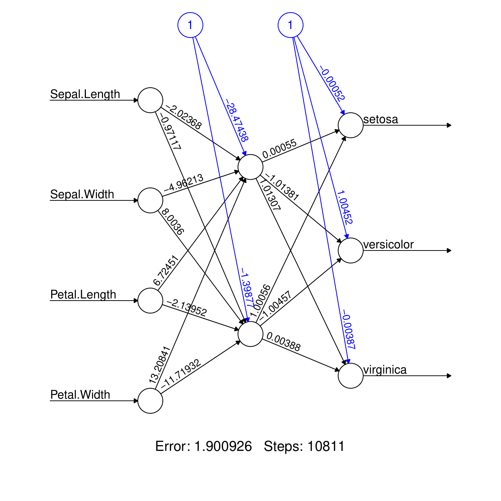
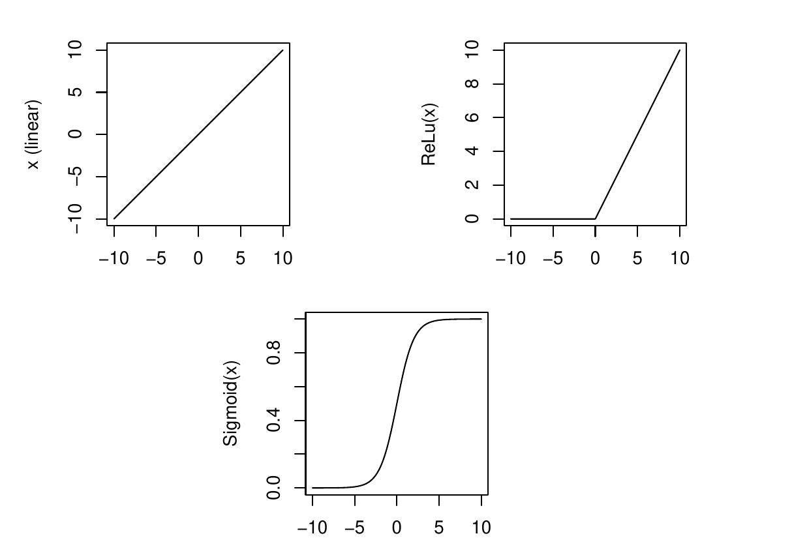

Neural Networks
In-class Python Jupyter Notebook 📄
Concept and prediction formula
Artificial Neural Network
Artificial Neural networks are models used for classification and for regression based on combining several predictions of small nodes. To illustrate the method we are applying it on the iris data set, without splitting between training and test sets.
Example: iris data with 3 possible classes, Setosa, Virginica, and Versicolor to be predicted from 4 features Sepal.Length \((x_1)\), Sepal.Width \((x_2)\), Petal.Length \((x_3)\), and Petal.Width \((x_4)\).
Example
A neural network looks like this

4 input nodes (circles)
Arrows with weights.
One middle layer made of 2 \((+1)\) nodes.
3 output nodes: one for each class (species).
Parameters
In the context of NN, people use the term weights to talk about the parameters of the model, \(\theta\).
E.g., on the middle layer, coefficients are associated to the arrows:
One constant term (node "1") called the bias: \[\theta_{11}^{(0)}=-28.5\]
One coefficient per arrows: \[\theta_{11}^{(1)}=-2.02, \ldots, \theta_{11}^{(4)}=13.21.\]
Node value
Arrows interring a node indicate a weighted sum of at the previous node values. E.g., consider the top node of the middle layer: \[\begin{aligned} \eta_{11} &=& \theta_{11}^{(0)} + \theta_{11}^{(1)} x_1 + \cdots + \theta_{11}^{(4)} x_4\\ &=& -28.5 -2.0 x_1 + \cdots + 13.2 x_4\end{aligned}\] Then the sigmoid function1. function is applied to obtain the value at the top node of the middle layer: \[\begin{aligned} Z_{11} &=& \sigma(\eta_{11}) = \frac{e^{\eta_{11}}}{1+e^{\eta_{11}}}\end{aligned}\] This is repeated at the second middle node: \[\begin{aligned} \eta_{12} &=& \theta_{12}^{(0)} + \theta_{12}^{(1)} x_1 + \cdots + \theta_{12}^{(4)} x_4\\ &=& -1.4 -1.0 x_1 + \cdots - 11.7 x_4\\ Z_{12} &=& \sigma(\eta_{12}) = \frac{e^{\eta_{12}}}{1+e^{\eta_{12}}}\end{aligned}\]
The output
The \(Z\) values are now passed to the outcome nodes. E.g., at setosa: \[\begin{aligned}
\eta_{12} &=& \theta_{12}^{(0)} + \theta_{12}^{(1)} Z_{11} + \theta_{12}^{(1)} Z_{21} \\
&=& 0.0 + 0.0 Z_{11} + 1.0 Z_{21} \\\end{aligned}\] The calculation is repeated for each node giving \(\eta_{12}, \eta_{22}, \eta_{32}\). Then, the value of the node is obtained applying the soft-max function: \[\begin{aligned}
Z_{12} &=& \frac{e^{\eta_{12}}}{e^{\eta_{12}}+e^{\eta_{22}}+e^{\eta_{32}}},\\
Z_{22} &=& \frac{e^{\eta_{22}}}{e^{\eta_{12}}+e^{\eta_{22}}+e^{\eta_{32}}},\\
Z_{32} &=& \frac{e^{\eta_{32}}}{e^{\eta_{12}}+e^{\eta_{22}}+e^{\eta_{32}}}.\end{aligned}\]
The prediction formula
The values at the output are the probabilities of each class predicted for the input \(x\): \[p_c(x;\theta) = Z_{c2}, \quad c=1,2,3.\] Indeed, the soft-max guaranties that \[0 < Z_{c2} < 1, \quad Z_{12}+Z_{22}+Z_{32} = 1.\] The prediction for \(x\) is the class with maximum probability: \[f(x;\theta) = \arg \max_{c=1,\ldots,C} p_c(x;\theta).\]
The regression case
For the regression, the main difference is that the output layer is made of just one node whose value is the final prediction. In the example, \[f(x;\theta) = \theta_{12}^{(0)} + \theta_{12}^{(1)} Z_{11} + \theta_{12}^{(1)} Z_{21}\]
Neural network design
Number of nodes and layers
Building NN is kind of an art. Two important parameters are
The number of middle layers called hidden layers,
For each hidden layer, the number of nodes.
There is no general rule for this choices. One has to try and see if the quality follows.
Empirical rules are
Hidden layers with more nodes help creating new features (new dimensions).
Hidden layers with less nodes help combining the previous features to create strong features (dimension reduction).
In the example, the sigmoid function was applied at each hidden layer node. This is not the only available choice: other functions can be used. These function are called activation functions.
For the hidden layers, usual choices are
(so-called) Linear; meaning no function (identity). \[g(x) = x\]
Rectified Linear Activation ReLu \[g(x) = \max(0,x)\]
Sigmoid \[g(x) = \frac{e^x}{1+e^x} = \frac{1}{1+e^{-x}}\]

For the output layer, choices are
Classification: softmax \[g(x_c) = \frac{e^{x_c}}{\sum_{j=1}^C e^{x_j}}.\]
Regression: same as hidden layers.
Activation functions
There is no one good way to do it, but there are plenty of errors that can be avoided:
Use non-linearity: if only the linear activation function is used in the hidden layer then the NN is a simple linear model. In particular,
For regression: if the output layer has a linear activation then the NN is equivalent to a linear regression.
For binary classification: if the output layer has a sigmoid activation then the NN is equivalent to a logistic regression.
Watch the range of the output. E.g., if \(y\) is positive, then using a ReLu activation function close to the output may be good, whereas using a sigmoid on the output layer will prevent the NN to predict values larger than 1.
Mix activation functions along the hidden layers: helps too learn non-linearities.
Loss functions
Loss functions
The most common loss functions are
For regression, the MSE \[\bar{\cal L}(\theta) = \frac{1}{n} \sum_{i=1}^n \{y_i - f(x_i;\theta)\}^2.\]
For classification, the cross-entropy \[\bar{\cal L}(\theta) = -\sum_{i=1}^n \sum_{c=1}^C 1_{\{y_i=c\}} \log p_c(x_i;\theta).\]
Here, \(\theta\) denotes all the NN parameters (weights).
Training algorithm
Gradient Descent
The training is done by minimizing \(\bar{\cal L}(\theta)\), which is an intensive computation. The most used algorithm is the gradient descent:
Start at a random set of weights \(\theta\),
Update the weights using a descent direction (i.e., a direction guaranteeing a diminution of the loss), usually the negative gradient \[\theta \leftarrow \theta - \eta \nabla \bar{\cal L}(\theta),\]
Iterate until convergence.
Above, \(\eta\) controls the learning rate. Its choice is crucial. It varies from iterations and can be a vector, i.e., one learning rate per weight (AdaGrad, RMSProp, Adam).
Backpropagation
The computation of the gradient \(\nabla \bar{\cal L}(\theta)\) can be very heavy on a NN. Backpropagation is a method exploiting the iterative structure of the network to compute this gradient.
Stochastic Gradient Descent
If \(n\) is large (lots of instances) \[\nabla \bar{\cal L}(\theta)=\sum_{i=1}^n \nabla \bar{\cal L}_i(\theta)\] is heavy to compute. It can be approximated by a partial sum over a random subset of instances \(S\subseteq \{1,\ldots,n\}\) : \[\nabla \bar{\cal L}(\theta)=\sum_{i=1}^n \nabla \bar{\cal L}_i(\theta) \approx \sum_{i \in S} \nabla \bar{\cal L}_i(\theta)\] This is a called stochastic gradient descent (SDG).
SDG: batches and epochs
For SGD, the practice is to
Split the set \(\{1,\ldots,n\}\) randomly into \(m\) batches of the same size, \(S_1,\ldots,m\),
Apply the gradient descent update step sequentially along the batches (in a random order).
One pass through all the \(m\) batches is called an epoch.
The choice of the size of the batch is a compromise between computation time and the quality of the gradient approximation:
A large batch size (at the limit \(n\)) makes the gradient heavy to compute but more accurate (\(S\approx \{1,\ldots,n\}\)). Each epoch has few iterations but each iteration is long.
A small batch size makes the gradient fast to compute (\(S\) is small) but approximate. Each epoch has a lot of short iterations.
Interpretation
Interpretation
NN are not interpretable. They are large model combining variables along several non-linear activation function layers. Specific methods can be used (see later in the course).
Model simplification
Model complexity
By construction NN are complex models: they have a lot of weights. E.g., even a small model with \(10\) features, \(2\) hidden layers with \((16,8)\) nodes, and 3 classes has \[(10+1)\times 16 + (16+1)\times 8 + (8+1)\times 3 = 339\] weights. With such a large number of parameters, the model is at risk of overfitting the training set by learning too much. One can regularize the model in a similar way to linear and logistic regressions.
Regularization
The idea is to use \(L_1\) and/or \(L_2\) penalties on the loss during the training \[\bar{\cal L}(\theta) + \lambda_1 \sum_{j} |\theta_j| + \lambda_2 \sum_{j} \theta_j^2\]. Again there is no simple way to set the penalty parameters \(\lambda_1\) and \(\lambda_2\). Note that it is possible to have different penalty parameters in different layers. Unlike regression and trees, and like SVM, this regularization can help to avoid overfitting but cannot be interpreted easily.
Footnotes
See logistic regression.↩︎